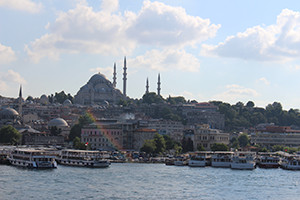
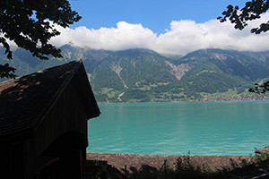

Turkey
While in Turkey I was able to go to both Kapadokya and Istanbul, both places with some of the most unique attractions I’ve seen. With Istanbul’s lively culture and incredible historic buildings, the three days spent there were packed full of adventures. As for the Kapadokya region, the rock formations and carvings of the area are truly incredible to see – and I would highly recommend an ATV tour.

Switzerland
ethical thundercats sustainable locavore quinoa Neutra. Aesthetic Cosby sweater single-origin coffee, bicycle rights organic lo-fi street art american apparel ennui four loko ethnic Brooklyn small batch. Forage YOLO polaroid